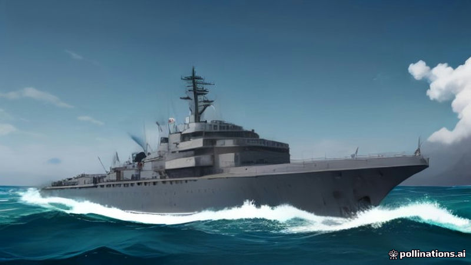

ইউক্রেনের সি‑ড্রোন লিবিয়ার বন্দর থেকে রাশিয়ান যুদ্ধজাহাজ ডুবিয়ে দিল
France 24, NPR World · 2026-11-23
AI-generated illustrationউক্রেনের সি‑ড্রোন ব্যবহার করে লিবিয়ার বন্দরতে নোঙর করা রাশিয়ান যুদ্ধজাহাজ ডুবে যাওয়া জানালেন জেলেনস্কি
প্রেসিডেন্ট ভ্লাদিমির জেলেনস্কি সোমবার জানিয়েছেন যে ইউক্রেনের বাহিনী লিবিয়ার একটি বন্দরতে নোঙর করা রাশিয়ান যুদ্ধজাহাজের ওপর হঠাৎ আক্রমণ চালিয়ে সি‑ড্রোনের মাধ্যমে জাহাজটি ডুবিয়ে দিয়েছে। ফ্রান্স ২৪ এবং এনপিআর ওয়ার্ল্ড উভয়ই এই দাবি রিপোর্ট করেছে।
ফ্রান্স ২৪ জানিয়েছে যে অপারেশনে সাতটি দেশীয় নির্মিত সি‑ড্রোন ব্যবহার করা হয়েছে, যা ২০২২ সালের পূর্ণাঙ্গ আক্রমণের এক বছর পর কমিশন করা রাশিয়ার নতুন জাহাজগুলোর একটি লক্ষ্যবস্তু ছিল।
বক্তব্য অনুযায়ী, এই আক্রমণটি ইউক্রেনের অমানবিক সামুদ্রিক সিস্টেমের ব্যবহার বাড়াচ্ছে এবং সামনের লাইন থেকে দূরে রাশিয়ান নৌবাহিনীর সম্পদের ওপর একটি উল্লেখযোগ্য আঘাত নির্দেশ করে।
Written by AI from facts reported by the outlets named above. It may contain errors; check the original reporting.English version
Ukrainian sea drones sink Russian warship in Libyan port
President Volodymyr Zelensky announced on Monday that Ukrainian forces carried out a surprise attack on a Russian warship anchored at a Libyan port, sinking the vessel with sea drones. The claim was reported by both France 24 and NPR World.
France 24 detailed that seven domestically produced sea drones were deployed in the operation, targeting one of Russia’s newest ships, which had been commissioned a year after Moscow’s 2022 invasion of Ukraine.
According to the statements, the attack demonstrates Ukraine’s expanding use of unmanned maritime systems and marks a notable strike against Russian naval assets far from the front lines.